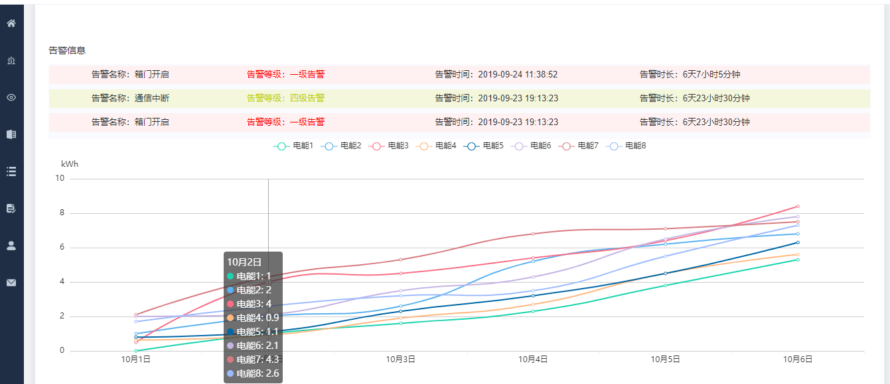

目录
在做一个某路灯管理处的物联网项目时，需要统计8个电表的电能曲线（时间-电能），需求就是能生成日报（24个点，间隔1小时，实时），月报（30个点，间隔1天，取每天的凌晨1点数据），年报（每个月，1号凌晨1点数据开始间隔9天，每个月取3个点，总共36个点）。
首先采集服务每隔一段时间会去采集电表的电能数据，模拟历史表会利用存储过程将实时数据写入his_aic表里。
30天 aic数据4万条记录左右 日报，月报可以直接在历史数据表中取
日表，定时任务，每隔1小时存入整点数据（如果没有整点，排序之后取接近点数据），一天24个数据，一年8760条记录。
月表，定时任务，每天凌晨1点取数据，按时间存入，一个月30条记录
年表，定时任务，1号，10号，19号，28号（每个月取4个数据，按时间记录，一年48条记录）
定时任务利用Coravel定时器完成，具体可参见Coravel定时器相关博客
前端曲线基于v-chart。
在使用 echarts 生成图表时，经常需要做繁琐的数据类型转化、修改复杂的配置项，v-charts 的出现正是为了解决这个痛点。基于 Vue2.0 和 echarts 封装的 v-charts 图表组件，只需要统一提供一种对前后端都友好的数据格式设置简单的配置项，便可轻松生成常见的图表。
npm i v-charts echarts -S
如果已经安装了echarts，则直接安装v-charts即可
npm i v-charts -S
import VeLine from 'v-charts/lib/line'<template>
<div>
<ve-line :data="chartData" :settings="chartSettings"></ve-line>
</div>
</template>先安装node环境
安装支持jade依赖：npm install jade jade-loader -D
<template lang="pug">
div
ve-line(:data='chartData', :settings='chartSettings')
</template>注意：使用pug空格数量要与上下文对应
export default {
data(){
return {
chartData: {
columns: ['日期','电能1','电能2','电能3','电能4','电能5','电能6','电能7','电能8'],
rows: [
{ '日期': '10月1日', '电能1': 0, '电能2': 1, '电能3': 0.5, '电能4': 0.63,'电能5': 0.8, '电能6': 2, '电能7': 2.1, '电能8': 1.7 },
{ '日期': '10月2日', '电能1': 1, '电能2': 2, '电能3': 4, '电能4': 0.9,'电能5': 1.1, '电能6': 2.1, '电能7': 4.3, '电能8': 2.6 },
{ '日期': '10月3日', '电能1': 1.6, '电能2': 2.6, '电能3': 4.5, '电能4': 1.9,'电能5': 2.3, '电能6': 3.5, '电能7': 5.3, '电能8': 3.2 },
{ '日期': '10月4日', '电能1': 2.3, '电能2': 5.2, '电能3': 5.4, '电能4': 2.7,'电能5': 3.2, '电能6': 4.3, '电能7': 6.8, '电能8': 3.5 },
{ '日期': '10月5日', '电能1': 3.8, '电能2': 6.2, '电能3': 6.4, '电能4': 4.5,'电能5': 4.5, '电能6': 6.5, '电能7': 7.1, '电能8': 5.5 },
{ '日期': '10月6日', '电能1': 5.3, '电能2': 6.8, '电能3': 8.4, '电能4': 5.6,'电能5': 6.3, '电能6': 7.8, '电能7': 7.5, '电能8': 7.3 }
]
},
chartSettings: {
yAxisName: ['kWh']
},
}
}
components: { VeLine }
}使用 data 属性表示图表的数据，使用 settings 用作图表的显示状态配置，settings 中所包含的是具体的图表配置，这里通过yAxisName设置电能单位为kWh
4.4中已经加入了注册组件的代码。
components: { VeLine }
这里只展示了月报里的7天，可以设置按钮同样道理依次展示日报年报数据。
后端电能定时计算部分预计10月1日-4日会完成，比前端要复杂一些。